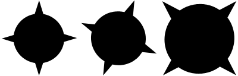
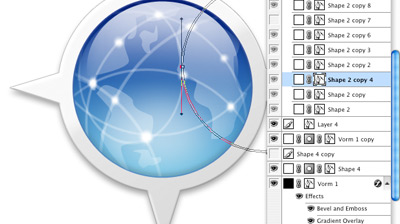
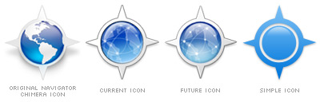

In continuation of my previous article on the history of the camino interface I thought it would be interesting to write a bit about the application icon. The visual point of recognition of every icon. Every once in a while a burst of critique arises from the Camino user groups concerning the Camino application icon. Heck the critique has been there from the start. Goes to show how well people like even the slightest change ;)
I just landed jasper's updated icon set, available to all the next time we get a working nightly (still prodding people about that, progress is being made).Based on feedback the main issue seems to be that people think the icon "is too small". But fact is that that's just a perceived issue. The icon uses the full 128/128 pixels canvas. As shown in the images below all 3 use the same square 128 pixel canvas, non the less the first icon seems to be much smaller. The issues is caused by the spikes, resulting in a smaller surface actually being used by the icon. Thanks again to Jasper for all his hard work and openness to comment. I sent him back to the drawing board (literally) more times than I could have handled were I in his shoes. Nevertheless he stuck with it and produced something that I think everyone can agree is a huge step in the right direction. Just try to keep that in mind when you're thrashing the new look :) - Mike Pinkerton
This also shows why so many icons either have a square or circle as their base shape. Those shapes just make very good use of the canvas, that's for sure something of great importance for an icon. On the other hand it does create a situation where the Camino icon stands out in the Dock because it appears to be smaller. We can argue that this is an issue or we can say that it's unique property of the Navigator/Chimera/Camino icon shape.
When, 2 years ago, I started working on creating the new look of what is now know as the "Camino 1.0 theme" redoing the application icon was a major part of the effort. Early on I also had the same problems with the icon, I argued we could use the canvas much more efficient. But the main problem in creating a new and unique icon for a web-browser lies in the fact that so many have already been made. And most of the obvious visual metaphors had already been used. Prior to the release of Apple's Safari, I had already made a compass icon for Camino. It was very bad and was certainly not the first. But it was the only really good visual metaphor left for a browser. Finding a new icon metaphor or logo for such a common application is really really hard. Since Apple had already released Safari we didn't have much choose other sticking with the icon Ugo Dantas De Santana made for Camino back when it was called Navigator.
To be honest I had really hoped I could come up with a stunning new icon for Camino but that thought was quietly smothered by Mike Pinkerton. Initially I had my doubts about his arguments, but looking back I think it was the best way to go.
You have to keep in mind that Navigator/Chimera was the first amazingly fast browser for the then very young Mac OS X platform. Most of the people who used Mac OS X in those days knew or used Navigator/Chimera one time or another. The application had a reputation and was well known. And that application had always had the same globe/compass combo icon.
When you have such an established picture mark you just don't switch to something else, especially considering the fact that nobody else used such a unique icon shape. Changing would be like McDonalds choosing a new font for their M that would have spiked arches instead of round ones. Or Apple taking out the bite of their apple logo. You just don't change the unique shape attributes that create the distinct visual identity of the logo. Accept of-course if the logo is so bad you just don't have any other choose. But that wasn't the case. So instead we choose for redoing the icon from scratch keeping only the unique shape as a base.
We tried a lot of things before we came to what we have now. We wanted a style that looked more like the style Apple introduced for Tiger (Mac OS X 10.4). We also wanted to get rid of the America's centric globe, and instead we choose for something that vaguely looks likes continents. (yes there here actually people who really didn't like america being in the icon). We also borrowed the .Mac globe look to emphasize the internet/network aspect of the application because only a small amount of people actually saw a compass in the icon. And finally most work went into creating all the sizes we needed of the icon. We actually have 1024 all the way down to a 16 square pixels versions of the icon. That is a pretty huge size difference. And the hard part is making sure the 16px version looks/feels the same as the 1024px version.
Only recently I introduced a monotone version of the icon. I created this icon mainly to have a simplified version that could be easily used on very small and solid colored canvases. Just using the base shape and an extra circle for the globe did the trick. It's so simple and yet works amazingly well, while still being recognizable as the camino icon. This version of the icon can be seen as the website icon, and on the .dmg icon and .dmg background image.
So you see how a thing that is perceived by some as a weakness, is actually the main strength of the icon. You just need to see and use it. There is always room for improvement but I think we succeeded quite well.